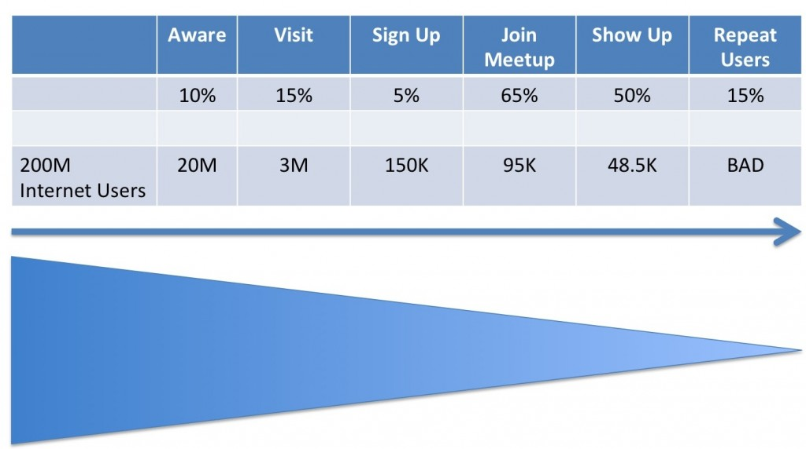

Meetup (CSN, Monday, Week 9)
competing-with-social-networksyear-twoNext step for Meetup in 2009: better engage existing users or attract more users?
Get more users. Why? Because double output of funnel by increasing sign-up rate from 5 to 10% than by increasing show up rate from 50% to 100%...
Conversion funnel:

{kind=link}
Ways to get traffic/users:
(1) Traditional Advertising
(2) Virality/WoM
--- Friend-to-friend (F2F): very low for meet sites; usually stigma/inherent problems (if you had 10 friends to do activity X, you wouldn't need a meet platform)
--- Stranger-to-stranger (S2S): potentially effective; prospective new user sees something about meet site on Twitter, a blog, etc.
(3) Product-driven traffic: usually least effective
"How big a problem is this in the industry: 'I will build a killer product and peeps will come.'" -- M.P.
Evaluating Meetup:
Breadth => not good
Search => works quite well: profiles, opportunities to display interesting, waiting list feature
Interaction => not great: organizer (not Meetup) controls user experience, requires tons of time/commitment to be a good organizer
Doug Atkins (former Chief Community Officer):
-- UX is not really under Meetup's control
-- Meetup core use case: find "like others" for people with new need, NOT social failures/flawed people
===> Users tend to have changed geographies or life circumstances (new mother)
Basic for engaging people in a new activity: make a series of increasingly-demanding asks
Example: political campaign
Step 1) Sign up on our website
Step 2) "Like" on Facebook
Step 3) Give $5
Step 4) Come to a march
Step 5) Lead a march
If you go straight from Step 1 to Step 5, it doesn't work and you scare people away.
Meetup needs to do a better job of facilitating low-investment interaction --- right now, asking you to come to a party where you don't know anyone. And that's scary...